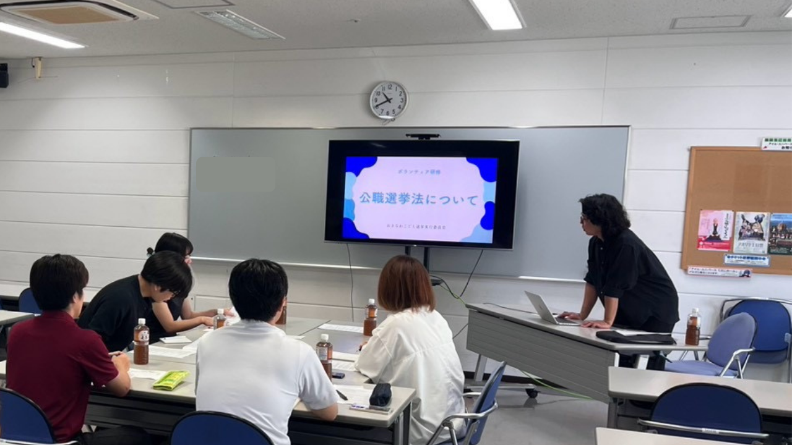

ボランティア研修会を実施しました！
9月5日（土）、てだこホールにてボランティア研修会を開催いたしました。

開催当日にボランティアとしてご協力・参加いただく地域の皆様にお集まりいただき、当日の動線や政治的中立のルール、公職選挙法や安全確認、こどもたちへの優しい声かけについて深く学び合いました。
心強い仲間の皆様と共に、9月12日の本番に向けて準備万端です！本当にありがとうございました。
※研修に参加できなかった皆様には個別で事前研修を実施いたします。
9月5日（土）、てだこホールにてボランティア研修会を開催いたしました。

開催当日にボランティアとしてご協力・参加いただく地域の皆様にお集まりいただき、当日の動線や政治的中立のルール、公職選挙法や安全確認、こどもたちへの優しい声かけについて深く学び合いました。
心強い仲間の皆様と共に、9月12日の本番に向けて準備万端です！本当にありがとうございました。
※研修に参加できなかった皆様には個別で事前研修を実施いたします。